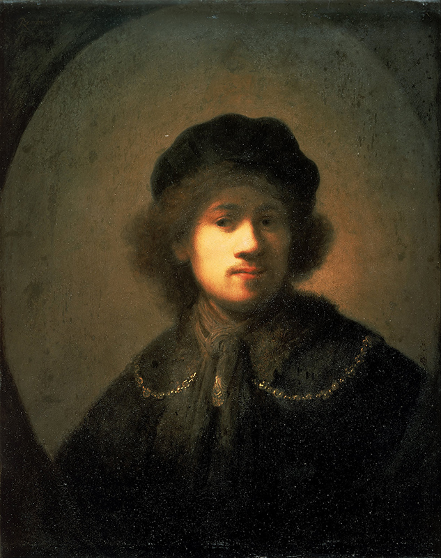

פונקציות הפתיחה בדיוקן האמן כאיש צעיר
מאת: אורלי אבן


⨯

Portrait of the Artist as a Young Man [Rembrant van Rijn /
Public
domain]
תקציר:
מאמר זה עוסק בהגדרת ואיתור הפונקציות והסטרוקטורות של טקסט הפתיחה ברומן דיוקן האמן כאיש צעיר מאת ג'יימס ג'ויס - רומן חניכה מראשית המודרניזם בספרות האנגלית, המתאר את תהליך ההתבגרות ורכישת המודעות העצמית של איש צעיר והתגבשותו כאמן. הגיבור הוא סטיבן דדאלוס - למעשה בן דמותו של ג'ויס - והרומן מלווה אותו מילדות מוקדמת עד ללימודי האוניברסיטה ומשלב בתוכו יסודות אוטוביוגרפיים. צורתו, שפתו של הרומן והאמצעים הרטוריים בהם משתמש ג'ויס שוברים קונבנציות של ריאליזם ספרותי ומפנים את הזרקור לרפלקסיה על עולמו הפנימי של הגיבור ותודעתו.
היות ומבנה הרומן והפתיחה שלו מובהקים מצד אחד, ומנגד הטקסט לכשעצמו רב-משמעי ובעל מורכבות לשונית עצומה, המאמר מתמקד בזיהוי של גבולות הפתיחה, תוך בחינת שתי חלופות אפשריות לתחימתה. התחימה נבחנת בשני מישורים - הסטרוקטורלי והתמטי: ראשית, בזיהוי הסטרוקטורות הנראטיביות אותן מיישם ג'ויס בפתיחה של הרומן, ועיגונן במכלול הרומן כולו; שנית, באיתור המערכת הסימבולית והמוטיבים המנחים, אשר להבנייתם כבר בפתיחה פונקציה חשובה בהנעת הנראטיב והתמה המרכזית של הרומן. שני היבטים אלה קשורים קשר הדוק לשימוש הייחודי בשפה ובדימויים, וכן בטכניקות הנרטולוגיות לעיצוב דמותו של הגיבור ותפישת עולמו כפי שהיא משתקפת בכתיבתו של ג'ויס. לבסוף, נדון המחבר המובלע והנמען המובלע של הרומן, כפי שהם מצטיירים מן הפתיחה ובקונטקסט של היצירה השלמה, וכן תפקידו האימננטי של המספר בכינון נקודת המבט ואישיותו של הגיבור כאמן צעיר.
מבוא
מאמר זה עוסק בהגדרת ואיתור הפונקציות והסטרוקטורות של הפתיחה ברומן מראשית המודרניזם בספרות האנגלית – דיוקן האמן כאיש צעיר מאת הסופר האירי ג'יימס ג'ויס (Joyce)[1], או כפי שהוא קרוי במקור A Portrait of the Artist as a Young Man[2]. בשנת 1904 כתב ג'ויס מאמר בשם זה, ובשנים 1907-1914 הפך אותו לרומן שנשא את השם Stephen Hero. משלא הצליח לפרסמו, שוכתב הרומן על ידי ג'ויס והתפרסם בהמשכים בירחון לונדוני, עד שראה אור כרומן מלא ב-1916.[3]
Portrait הוא רומן חניכה המתאר את תהליך ההתבגרות ורכישת המודעות העצמית של איש צעיר והתגבשותו כאמן. גיבור הרומן הוא סטיבן דדאלוס, שהוא למעשה בן דמותו של ג'ויס, והרומן מלווה אותו מילדות מוקדמת עד ללימודי האוניברסיטה ומשלב בתוכו יסודות אוטוביוגרפיים חזקים מתחנות בילדותו של ג'ויס (סטיבן, לדוגמא, מתחנך במוסדות בהם למד ג'ויס). ג'ויס נודע בשילוב יסודות אוטוביוגרפיים מחוויותיו, רקעו הדתי וחייו העירוניים במכלול יצירתו, ואירלנד היתה הנושא המרכזי בכתיבתו המאוחרת. כל אלה שימשו חוט מקשר בין כל יצירותיו. כך למשל, אוסף הסיפורים הקצרים הדבלינאים (The Dubliners) שהתפרסם בשנה בה החל להתפרסם Portrait, גם הוא בעל סטרוקטורה המשכית של מעבר מילדות לבגרות; ואילו יוליסס (Ulysses) נפתח בשובו של אותו סטיבן דדאלוס מאירלנד לאחר עזיבתו לפריז - הנקודה בה מסתיים Portrait.[4]
יחד עם זאת, מבנהו, סגנון כתיבתו של Portrait והאמצעים הרטוריים בהם משתמש ג'ויס מפנים את הזרקור דווקא לעולמו הפנימי של הגיבור, להתפתחותו הנפשית ולהיבטים פסיכולוגיים של תודעתו. ביצירה זו מופיעים רמזים לסגנון הכתיבה המאוחר יותר של ג'ויס, בתצורת שימוש במונולוג פנימי, בטכניקת זרם-תודעה, ועיסוק בנפש יותר מאשר במציאות החיצונית. בעשותו כך, ההקבלות האוטוביוגרפיות בין ג'ויס לגיבור ספרו נעשות פחות חיוניות לקריאה ביצירה, ובנקודות מסוימות נותרות אנקדוטה בלבד.
חידושיו הפורמליסטיים והנראטיביים של ג'ויס הובילו למבקרים רבים להגדיר את עבודתו כספרות מודרניסטית, המאופיינת בגישה אקספרימנטלית ורפלקסיבית לצורה ושפה. בתור שכזו היא מחייבת נסיגה מריאליזם, שכן השפה חדלה מלייצג את העולם החיצוני. בהתאם, כבר בפתיחתו של Portrait ישנה שבירה של הקונבנציות הנוקשות של ריאליזם ספרותי לטובת תיאור אימפרסיוניסטי של אירועים מהותיים להתפתחותה של הדמות הראשית.[5]
המאמר יתמקד בזיהוי של גבולות הפתיחה, תוך בחינת שתי חלופות אפשריות לתחימתה. התחימה תיבחן בשני היבטים עיקריים: ראשית, בזיהוי הסטרוקטורות הנראטיביות אותן מיישם ג'ויס בפתיחה של הרומן, ועיגונן במכלול הרומן כולו; שנית, באיתור המערכת הסימבולית והמוטיבים המנחים, אשר להבנייתם כבר בפתיחה פונקציה חשובה בהנעת הנראטיב והתמה המרכזית של הרומן. שני היבטים אלה קשורים קשר הדוק לשימוש הייחודי בשפה ובדימויים, וכן בטכניקות הנרטולוגיות לעיצוב דמותו של הגיבור ותפישת עולמו כפי שהיא משתקפת בכתיבתו של ג'ויס. לבסוף, אדון במחבר המובלע ובנמען המובלע של הרומן, כפי שהם מצטיירים מן הפתיחה ובקונטקסט של היצירה השלמה, וכן בתפקידו האימננטי של המספר בכינון נקודת המבט ואישיותו של הגיבור כאמן צעיר.
סטרוקטורות נראטיביות (או: פתיחה ראשונה)
חוקר הספרות הלל דלסקי מגדיר את Portrait כדוגמה המובהקת ביותר באנגלית של הבילדונגסרומן (Bildungsroman)[6] - רומן החניכה, המשרטט את מהלך חייו של הגיבור מילדות עד בגרות.[7] ג'קלין בלאנג'ר (Belanger) מסווגת אותו באופן ספציפי יותר כקונסטלרומן (Künstlerroman)[8] - המתמקד בהתהוות הרגשית והרוחנית של אמן. Portrait מתאר את דמותו של סטיבן דדאלוס החל מהרגעים הראשונים של ילדותו המודעת, דרך גיבוש תפישת עולמו האסתטית ועד לרגע בו הוא בשל לעזוב את אירלנד כדי להגשים את ייעודו כאמן. מסעו של סטיבן לעבר בגרות מעוצב לא רק במונחים של עלילה ותיאורים, אלא גם באמצעות שינויים הדרגתיים בטכניקות הנראטיביות והסגנוניות לאורך הרומן.[9]
הנראטיב של הספר כולו תחום בין האפיגרף בפתיחת הספר למשפט החותם את הספר. שורת האפיגרף בראשית הספר לקוחה ממטמורפוזות של אובידיוס (Ovidius): "Et ignotas animum dimittit in artes”.[10] ציטטה זו מתייחסת לסיפור המיתולוגי של דדאלוס ובנו איקרוס, ולפיה דדאלוס "גמר אומר לעסוק באמנויות לא ידען". על פי הסיפור המיתולוגי, דדאלוס – שפירוש שמו ביוונית הוא אומן ערמומי - ובנו איקרוס נכלאו על ידי מלך כרתים בלבירינת אותו תכנן במקור דדאלוס כדי להחזיק בשבי את המינוטאור. דדאלוס מתכנן ובונה כנפיים כדי שהוא ובנו יוכלו לברוח. איקרוס לא שועה לאזהרותיו של אביו ומתעופף קרוב מדי לשמש, אשר ממיסה את השעווה בכנפיים שבנה אביו והוא נופל אל מותו בלב ים. דדאלוס הוא האומן (artificer) הממציא אמצעי להתעופף כדי להימלט מן הלבירינת. תכליתה של אומנותו היא שחרור. לטענת דלסקי, האפיגרף מניע את הנראטיב הנעה כפולה, כאשר גיבור הספר סטיבן דדאלוס מונע לאורך העלילה לעבר ההכרה בייעודו כאמן, וכן ההכרה בצורך להשתחרר מכבלי ביתו, ארצו ודתו.[11] הכרה כפולה זו משתמעת מפנייתו של סטיבן אל דדאלוס המיתולוגי בסוף הרומן: "Old father, old artificer, stand me now and ever in good stead" (עמ' 196). משהחליט סטיבן ללכת בעקבות דדאלוס, הוא נחוש בדעתו לעזוב את האי והלבירינת שלו – דאבלין – כצעד ראשון להגשמת ייעודו כאמן.
האפיגרף, למעשה מנסח את תכליתו הבסיסית של הנרטיב, ולכן ננקטים אמצעים עלילתיים של צמצום ורדוקציה כך שכל התקדמות עלילתית מוקדשת לתכליתיות זו. ג'ויס מתאר רק את החוויות ההכרחיות להתפתחותו של הגיבור. כל דבר שאינו קשור במישרין לתכלית מנופה – תיאור או אפיון של דמויות משנה, תיאור ריאליסטי של הסביבה הפיזית, רצף לינארי של מרחב וזמן – כל אלה נזנחים לטובת חמישה פרקים דחוסים המהווים סטרוקטורה בסיסית של הבילדונגסרומן. באופן סכמטי, ניתן לאפיין את חמישה הפרקים כרונולוגית ותמטית באופן הבא: I – רשמי ילדות מוקדמים – מיצוב הגיבור ביחס לעולם (בית ספר יסודי); II – התבגרות ואובדן תום – תגובה של הגיבור לסביבתו (בית ספר תיכון); III – אשמה, הכאה על חטא, וידוי והתעלות רוחנית (בית ספר תיכון); IV – טרנספורמציה ושיבה לחיק העולם ה"ארצי" (בית ספר תיכון); V – בגרות, שחרור מכבלי המשפחה, הדת והפוליטיקה לטובת ייסורי האהבה והאמנות (קולג'). כל פרק בספר מהווה אבן בניין בסטרוקטורה השלמה, ותנאי הכרחי להנחת האבן הבאה אחריה והצגת התמה המרכזית של העלילה. לפי דלסקי הספר, על מורכבותו המשתלבת, מלוכד בהרמוניה משום שבכל שלב ושלב מצטייר סטיבן דדאלוס כמות שנעשה בלית ברירה, והבחירה שלו בכל שלב מבוססת על השלב הקודם.[12]
מאפיין מלכד נוסף של הבילדונגסרומן הוא העניין בפיתוח דמות מרכזית אחת. מגמה זו מועצת בספר לכדי כך שסטיבן הוא הלכה למעשה הדמות היחידה.[13] הוא משמש המוקד המחולל של העלילה והמספר מציג את נקודת הראות שלו. יתר הדמויות נותרות שטוחות, ייצוג או תיאור שלהן הוא פונקציונלי בלבד, ונועד להאיר את דמותו של סטיבן או את מערכת היחסים שלו עמן. הדוגמא הקיצונית ביותר לכך היא ששמה של מושא אהבתו של סטיבן מוזכר רק בראשי תיבות – E.C..[14]
ניתן לראות בפתיחה של הספר הטרמה תמטית למה שבא אחריה, אך כפי שמציין דלסקי היא משמשת גם פרדיגמה לתכונה המרכזית של הנרטיב, לדרך בה בחר ג'ויס לשרטט את תודעתו של הגיבור.[15] העמוד וחצי הראשון של הספר הוא תיאור העולם מנקודת מבטו ומרמת מודעתו של סטיבן הילד הרך בשנים. באופן דומה, נקודת מבט סובייקטיבית זו נשמרת לכל אורך הספר, משתנה ומשתכללת ככל שסטיבן גדל ומידת האינטראקציה שלו עם העולם הסובב אותו גדלה
הפסקה הפותחת את הספר היא סיפור מעשייה שמספר לסטיבן אביו. הטקסט אינו זיכרון בדיעבד של מבוגר המגולל את חוויית ילדותו, אלא אם כי תיאור מיידי, ישיר ובלתי אמצעי של החוויה כפי שהיא נתפסת על ידי סטיבן הילד:
Once upon a time and a very good time it was there was a moocow coming down along the road and this moocow that was coming down along the road met a nicens little boy named baby tuckoo ...
His father told him that story: his father looked at him through a glass: he had a hairy face.
He was baby tuckoo. The moocow came down the road where Betty Byrne lived. She sold lemon platt. p.3
ג'ויס מגביל את עולמו של סטיבן לתיאור ישיר של רשמי חושיו ולמידע שהוא מקבל מהדמויות הסמכותיות בחייו של ילד קטן – אביו ואמו. כך, מתוודע סטיבן למעשייה (והקורא יודע לזהותה מיד כמעשייה בשל הפתיחה הקלאסית "Once upon a time") אודות הפרה הפוגשת ילד חמודות אותה סיפר לו אביו, והוא מזהה את הילד הקטן בסיפור כהוא עצמו כיוון שאביו אמר לו זאת, ולכן "He was baby tuckoo". התיקוף לזהותו וקיומו של סטיבן ניתן לו על ידי אביו.
משם ממשיך סטיבן לרשמי חושיו לגבי מאפייניו הפיזיים של אביו - אביו מסתכל עליו מבעד לזכוכית וסטיבן מבחין בשיער הפנים שלו. השימוש בלשון פשוטה מעיד על כישורי השפה שהספיק הילד לרכוש: אביו מסתכל מבעד לזכוכית ולא "מרכיב משקפיים", ויש לו פנים שעירות ולא "זקן" או "שפם". כמו כן, ישנו שימוש במשפטים קצרים ופשוטים תחבירית. חשיבותה של השפה, שתתפוס מקום חשוב לאורך הספר, ניכרת בשורות הבאות:
O, the wild rose blossoms
On the little green place.
He sang that song. That was his song.
O, the green wothe botheth. (p.3)
מרגע שסטיבן שר את השיר, השיר הופך לשלו, המילים הן שלו ותפקידן אינו דיסקריפטיבי, בשונה מהמילים ששימשו אותו לתאר את אביו. משם ממשיך הטקסט לאסוציאציה הבאה:
When you wet the bed first it is warm then it gets cold. His mother put on the oilsheet. That had the queer smell.
His mother had a nicer smell than his father. She played on the piano the sailor's hornpipe for him to dance. He danced:
Tralala lala,
Tralala tralaladdy,
Tralala lala,
Tralala lala. (p.3)
סטיבן שב לתאר את אבחנותיו לגבי העולם החיצוני וכעת נוספת לתיאור אמו, המובחנת מאביו באמצעות הריח. כך מושלם תיאור של כל רשמי החושים של סטיבן. אביו מתואר באמצעות חוש השמיעה והראיה, כאשר הוא מספר לסטיבן סיפור ומתבונן בסטיבן מבעד לזכוכית. חוש הטעם מתבטא בעוגת הלימון שבסיפור של אביו. חוש המישוש בא לידי ביטוי בניגוד שבין המיטה החמה כאשר מרטיבים אותה בשתן לבין הקור שלה לאחר מכן. ולבסוף מתוארת אמו באמצעות חוש הריח והשמיעה, כאשר היא מנגנת עבורו בפסנתר. ושוב, לסירוגין, לאחר תיאור חושי דסקריפטיבי שבה השפה, עמה משתעשע סטיבן.
משם, שב ג'ויס לתאר את שני בני הבית הנוספים:
When you wet the bed first it is warm then it gets cold. His mother put on the oilsheet. That had the queer smell.
His mother had a nicer smell than his father. She played on the piano the sailor's hornpipe for him to dance. He danced:
Uncle Charles and Dante clapped. They were older than his father and mother but uncle Charles was older than Dante.
Dante had two brushes in her press. The brush with the maroon velvet back was for Michael Davitt and the brush with the green velvet back was for Parnell. Dante gave him a cachou every time he brought her a piece of tissue paper. p.3
דודו ודודתו של סטיבן ייצגו בהמשך הספר שתי עמדות פוליטיות מנוגדות ויגלמו למעשה את בסיסו של הקונפילקט המרכזי בלאומיות האירית של שלהי המאה ה-19. מייקל דאוויט וצ'ארלס פארנל הם שתי דמויות פוליטיות חשובות, ופארנל במיוחד מוזכר בספר פעמים רבות. סטיבן מזהה אותם רק בשמן של מברשות, אך כבר בשלב זה מניח ג'ויס את היסודות לוויכוח הפוליטי המתואר בהמשך הפרק, בו יקחו חלק כל בני משפחתו.
לאחר תיאור התא המשפחתי שלו והבחנה בין בני הבית השונים, עובר סטיבן להבחנה בין המשפחה שלו והעולם שמחוץ לביתו. הוא מבחין בכך שלמרות שהמילים "אמא" ו"אבא" מסמלות את ההורים שלו, הן גם מסמנות של הורים של אחרים. גם לאיילין, איתה הוא עתיד להתחתן לכשיגדל, יש אמא ואבא:
The Vances lived in number seven. They had a different father and mother. They were Eileen's father and mother. When they were grown up he was going to marry Eileen. He hid under the table. His mother said:
—O, Stephen will apologize.
Dante said:
—O, if not, the eagles will come and pull out his eyes.—
Pull out his eyes,
Apologize,
Apologize,
Pull out his eyes.
Apologize,
Pull out his eyes,
Pull out his eyes,
Apologize. (pp.3-4)
הפתיחה נחתמת במשפט מתוך שיר ילדים מאיים. תגובתו של סטיבן למשמע המשפט אינה מתוארת, אלא רק חזרה שלו על מילותיה של דנטי מותירה את תחושת החרדה העולה ממנה לדמיונו של הקורא. דורות'י ואן-גנט (Van Ghent) טוענת כי משפט זה מסכם את תחושת חוסר הביטחון, האימה (Pull out his eyes) והאשמה (Apologize) של סטיבן בעולם אותו הוא אינו מצליח לתפוש במלואו.[16]
הפסקה הבאה עוברת במעבר חד לסצנה אחרת, וניתן להבחין בקפיצה קדימה בזמן. סטיבן כבר לא נמצא בבית הוריו בחיק משפחתו, אלא אם בפנימייהCollege Clongowes Wood בקרב חבריו לספסל הלימודים. כמו כן, ישנו שינוי סגנוני חד בכתיבה ובנקודה זו למעשה מתחיל הנראטיב. אלה מעידים על תיאור של סטיבן בגיל מתקדם יותר, כאשר תודעתו מפותחת מספיק בכדי לתרגם את חייו באמצעות שפה לכדי נראטיב קוהרנטי. מבחינה זו, ניתן לתחום את הפתיחה של הספר עד לפסקה זו, כשמנקודה זו ואילך ישנו תיאור יותר ריאליסטי ופיגורטיבי של מהלך חייו של הגיבור בסדרה של אירועים.
למרות שהוא אינו במוקדה של עבודה זו, הסיום של הרומן הוא סימטרי לפתיחה. כפי שצוין כבר, משפט הסיום של הספר חותם את המסלול שמתווה האפיגרף בפתיחה. סימטריה סטרוקטורלית נוספת היא היעדר הנרטיב בפתיחה ובסיום. כפי שהפתיחה הראשונה של הספר מאופיינת בסובייקטיביות מועצמת וכתיבה אסוציאטיבית ומקוטעת המבטאת את הפרספציה של סטיבן הילד, שלושת העמודים האחרונים של הרומן הם למעשה רישומים ביומנו של סטיבן הגבר הצעיר. גם הם מאופיינים בהיעדר עלילה, משפטים קצרים, ובכתיבה אסוציאטיבית ומקוטעת המבטאת את זרם תודעתו של הגיבור. כל ה"רשתות" (nets) הכובלות מהן רוצה להשתחרר סטיבן המבוגר בסוף הרומן – בית, מדינה ודת, אלה תוארו במובנן הבסיסי והמיידי ביותר בפתיחה מבעד עיניו של סטיבן הילד.
בנוסף, מציינת בלאנג'ר כי השפה, שבעמודי הפתיחה נרכשת על ידי סטיבן באמצעות שירי ילדים וסיפורים אותם הוא מקבל באופן פאסיבי, הופכת בסיומו של הרומן לשפתו שלו כשהוא מאמץ את תפקיד הסופר שכותב את יומנו. סטיבן מחליף את צורות השפה המוכרות בשפתו שלו, וכך הסובייקט של הרומן הופך למספר בעצמו.[17] עם הפניה לדדאלוס היוצר המיתולוגי בסוף הרומן, סטיבן מתחיל להיות הסופר של הסיפור שלו, כפי שבעמוד הראשון היה זה השיר שלו – “his song”. ואת אביו הביולוגי שסיפר לו סיפור בפתיחת הרומן הוא מחליף באביו המיתולוגי בסוף הרומן.[18] כך נתחם הרומן כולו במסגרת סימטרית ותכליתית המאגדת בתוכה את הרעיונות והתכנים הפרושים לאורכו.
שפה, מוטיבים, דימויים וסימבוליות (או: פתיחה שניה)
ניתן להגדיר לרומן גם פתיחה שניה, החל בנקודה בה מסתיימת הפתיחה הראשונה ובחמישה עשר העמודים הבאים המתארים את חייו של סטיבן בקלונגוז ווד קולג'. אט אט סטיבן ממצב עצמו ביחס לעולם ומגבש זהות עצמאית בזכות עמידה על ההבדלים בינו לבין אחרים. עמודים אלה, שהם כאמור תחילתו של הנראטיב, משרטטים את המוטיבים המרכזיים השזורים לכל אורכו של הספר, וכן הדפוסים הפסיכולוגיים העיקריים בדמותו של הגיבור ועולמו האסוציאטיבי. ניתן לאתר בהם את מרבית הסמלים והדימויים החוזרים שילכו וישתכללו לאורך הרומן.
הפתיחה השנייה מתחילה בסצנה במגרש המשחקים בקלונגוז ווד. היא ממקמת את סטיבן לראשונה מחוץ לתא המשפחתי ובקרב קהילת הילדים בני גילו. אך סטיבן מתואר כמתבונן מן הצד ולא כמשתתף פעיל במשחק בין הילדים: " He kept on the fringe of his line, out of sight of his prefect, out of the reach of the rude feet…” (עמ' 4). תיאור ההתרחשות נקטע שוב ושוב על ידי אסוציאציות וקטעי מחשבות של סטיבן, ודפוס זה חוזר על עצמו לאורך הסצנות העוקבות. לפי ואן-גנט, השימוש של ג'ויס בטכניקת זרם התודעה, או מונולוג פנימי, מעצימה את תחושת הבידוד והניכור של סטיבן מסביבתו.[19]
בדומה לפתיחה הראשונה, ניכרת חשיבות לרשמי החושים – מזג האוויר, הצלילים הנשמעים, המילים המדוברות – בניסיון של סטיבן לייחס משמעות להתרחשויות הסובבות אותו. נשמעות צעקותיהם הרמות של הילדים המשחקים כדורגל וקול חבטת רגליהם בכדור השמנוני. לעומת פעלתנותם של הילדים סטיבן מתואר בחולשתו הפיזית:”He felt his body small and weak […] and his eyes were weak and watery.” (עמ' 4).
לאחר מכן פונה סטיבן לעיסוק במשמעותם של שמות, כלומר לקשר שבין המסמן למסומן. כך, הוא תוהה על משמעות הכינוי "dog in the blanket" שניתן לפודינג, וכיצד כינוי זה מייצג משהו אודות הפודינג ותכונותיו הממשיות. באופן דומה הוא תוהה לגבי המילים “belt” (“That was a belt round his pocket. And belt was also to give a fellow a belt.”, עמ' 4) ו-“suck” (“Suck was a queer word…the sound was ugly.”, עמ' 6). סטיבן אף נדרש לפשר שמו שלו ושם אביו, המופיע לראשונה במלואו כאשר תלמיד אחר שואלו לשמו:
Stephen had answered: Stephen Dedalus.
Then Nasty Roche had said:
—What kind of a name is that?
And when Stephen had not been able to answer Nasty Roche had asked:
—What is your father?
Stephen had answered:
—A gentleman.
Then Nasty Roche had asked:
—Is he a magistrate? (p.4)
דמותו של סטיבן וזהותו מתגבשות באמצעות השפה. למן העמוד הראשון של הפתיחה, הגירויים החיצוניים מיתרגמים באמצעות השפה לרגשות המכוננים את הפרספציה של סטיבן. וכך, לאורך הרומן, לשפה ישנו תפקיד מכונן בתיאור וגיבוש אישיותו של הגיבור, וכן תפיסת המציאות שלו. דרך השפה ובאמצעותה מתגבשת בפני סטיבן גם תפישת המציאות של הסובבים אותו.[20]
הביטוי המפורש ביותר למציאת מקומו בעולם באמצעות השפה הוא כאשר סטיבן כותב את שמו, ואז את כתובתו עד מיצובו ההדרגתי בקונטקסט הכללי של היקום כולו:
He turned to the flyleaf of the geography and read what he had written there: himself, his name and where he was.
Stephen Dedalus,
Class of Elements
Sallins
County Kildare
Ireland
Europe
The World
The Universe (pp.9-10)
לאחר מכן, חברו ממצב את שמו של סטיבן בקונטקסט של עולמו החברתי-תרבותי:
That was in his writing: and Fleming one night for a cod had written on the opposite page:
Stephen Dedalus is my name,
Ireland is my nation.
Clongowes is my dwellingplace
And heaven my expectation. (p.10)
ואז הוא נדרש לתהייה המתבקשת אודות הקשר בין צורה וסדר לתוכן, אודות גבולותיו של היקום והאחראי לקיומם:
He read the verses backwards but then they were not poetry. Then he read the flyleaf from the bottom to the top till he came to his own name. That was he: and he read down the page again. What was after the universe? Nothing. […] It was very big to think about everything and everywhere. Only God could do that. (p.10)
בנוסף לשימוש ולדיון של ג'ויס בשפה כמכוננת תודעה, הוא שזר לאורך הטקסט מספר מוטיבים. אחד המוטיבים המרכזיים שמופיע כבר בפסקה הראשונה של הפתיחה, ומלווה את העלילה הוא מוטיב הקור והלחות – שימוש חוזר במילים cold, chilly, wet, damp, slime, water(y) לתיאור מצבים ומחשבות של סטיבן בהקשר של אירועים המתרחשים בבית הספר. כמו כן, ישנו איפיון של האור והאוויר בחוץ, שישוב ויחזור על עצמו כמעט באופן זהה לאורך כל הרומן. לעתים קרובות האוויר מתואר כחיוור (“The evening air was pale”, עמ' 4) - אף על פי שלאוויר אין תכונה של צבע, והאור אפור (“grey light”, עמ' 4) - אף כי אור נקשר בדרך כלל עם צבע לבן או צהוב. עם התקדמות הרומן, דפוסי הדימויים הללו מקבלים משמעויות מורכבות יותר. דימויים הקשורים בקור ומים על פי רוב בעלי אסוציאציה שלילית עבור סטיבן. העושר של החוויה הפנימית של סטיבן מעומת עם עגמומיותו של העולם החיצוני. הבית ומשפחתו, לעומת זאת, יתאפיינו בחזרה על מילים המתארות חמימות וצבע.
לאורך הפתיחה, דימויים של קור ולחות מעידים על חזרה אל הנראטיב. כאמור, העלילה נקטעת על ידי מחשבות אסוציאטיביות של סטיבן, והדימויים מעידים על שיבה והתקדמות בעלילה הלינארית ומייצרים המשכיות. לאחר הפוגה קצרה בה נזכר בפרידה מאביו ואמו עם הגיעו לפנימייה, שב סטיבן למציאות בה מגפיהם הבוציות של הנערים שועטות אחר הכדור. ושוב : “It would be better to be in the study hall than out there in the cold. The sky was pale and cold…” (עמ' 5). משם מפליג סטיבן בדמיונו למחשבות אחרות, ואז שב לזיכרון של מה שעוללו לו הילדים המשחקים כעת לפניו במגרש:
He shivered as if he had cold slimy water next his skin. That was mean of Wells to shoulder him into the square ditch because he would not swop his little snuff box for Wells's seasoned hacking chestnut […] How cold and slimy the water had been! […] Mother was sitting at the fire with Dante waiting for Brigid to bring in the tea. She had her feet on the fender and her jewelly slippers were so hot and they had such a lovely warm smell! (p.6)
בניגוד לאכזריותו של הילד שזרק אותו לבור שופכין משום שלא שיתף איתו פעולה במשחק, אמו של סטיבן מתוארת בדימויים של חום, יושבת עם דנטי ליד האש, מוגש לה תה ולנעלי הבית שלה ריח חם (שוב, חוסר התאמה בין חוש למילת התואר המוצמדת אליו).
הנפילה של סטיבן למים גורמת לנפילתו למשכב. אך טרם יגיע למרפאה לקבלת טיפול לחוליו, מתוארים אירועים מהם יכול הקורא להבין את שגרת יומו ואת רגשותיו כלפי שגרה זו: כשהוא צעד במורד המסדרון האוויר מצנן אותו (“It was queer and wettish”, עמ' 6); כשהוא מתחרה על תואר התלמיד הראשון בכיתה פניו צוננים (“…he felt his face quite cool.”, עמ' 7); בחדר האוכל הוא לא מסוגל לאכול את הלחם הלח (“…could not eat the damp bread.”, עמ' 7), נתקף געגועים הביתה ומתחיל לחוש ברע; כשהילדים לועגים לו בחדר המשחקים גופו מתחמם לרגע ומיד הוא נזכר בקור המים של בור השופכין (“And how cold and slimy the water had been!”, עמ' 9); כשהוא יושב ליד שולחנו בחדר הלימוד הוא מסמן כמה ימים נותרו עד חופשת חג המולד, ומדמיין את הרגע בו ישכב במיטתו הקרה עד שתתחמם; כשהוא מגיע לתפילת הלילה גם הקפלה קרה (“There was a cold night air in the chapel…”, עמ' 11); כשהוא כורע להתפלל לפני מיטתו אצבעותיו רועדות; וכשהוא מזדחל בין הסדינים הוא רועד בכל גופו (“…curled himself together under the cold white sheets, shaking and trembling.”, עמ' 12). בלילה מדמיין סטיבן את השיבה המיוחלת הביתה לחופשת חג המולד, אך מתעורר חולה לאורו החיוור של הבוקר (“The sunlight was queer and cold”, עמ' 14). חבריו שקוראים לו לתפילת הבוקר מבחינים בחשש בחוליו וקוראים לאחראי, שמניח יד קרה על מצחו (“…he felt his forehead warm and damp against the prefect’s cold damp hand.”, עמ' 15) ומוביל את סטיבן למרפאה. גם מחלונות המרפאה מבחין סטיבן באור היום הקר, אך שיחה עם האח מייקל מרוממת את רוחו, ולכן: “How pale the light was at the window! But that was nice. The fire rose and fell on the wall.” (עמ' 18). כך מלווים דימויי החום, הקור והלחות את כל מהלך הנראטיב של הפתיחה.
מוטיב נוסף שמוזכר גם הוא בפסקה הראשונה של הפתיחה הוא מוטיב התעופה וסמל הציפור:”… flew like a heavy bird through the grey light.” (עמ' 4, חוזר על עצמו גם בעמ' 14). לפי בלאנג'ר, מוטיב המעוף והנפילה הוא הן תמטי והן סטרוקטורלי.[21] ציפורים במעופן מופיעות כבר בפתיחה הראשונה, עם המזמור אודות הנשרים שיעקרו את עיניו של סטיבן אם לא יתנצל. הן מופיעות שוב מספר פעמים ברומן, בחזיונותיו של סטיבן ובתיאור של דמויות כ"דמויות ציפור", והן מהוות מעין תזכורת לדרישה להגשמת ייעודו. כבר בשורת האפיגרף יש התייחסות למיתוס של איקרוס ודדאלוס שבנה לו כנפיים מנוצות ציפורים כדי לברוח. עבור סטיבן, שמו הוא גם נבואה לייעודו. כשהוא מתכונן לעזוב את אירלנד ומעלה את דדאלוס כ"אב קדמון" ברישום האחרון ביומנו, מזוהה סטיבן עם איקארוס לא פחות מאשר עם דדאלוס. ברור שאם יגביה עוף בנסותו לחמוק מן הרשתות הלוכדות אותו, וייסוג משגרת החיים, נכונו לו מפלה כאמן.[22] המעוף והנפילה מטה לארץ מתורגמים גם אל תוך הנרטיב, כשהרגעים של התעלות הרוחנית של סטיבן מלווים במפח נפש ו"חזרה לארץ". כך למשל ההתרגשות מהחוויה המינית הראשונה של סטיבן בסוף פרק II הופכת לייסורי אשמה בפרק III, וההתעלות הרוחנית שבווידוי בסוף פרק III מתרוקנת מתוכנה בפרק IV. לאורך הפתיחה המעוף והנפילה מיוצגים בזעיר אנפין במציאות הקרה של חוויות בית הספר ובפנטזיות החמימות של סטיבן על חופשת חג המולד– הציפור הכבדה מופיעה ראשית לפני שמתוארת נפילתו של סטיבן לבור השופכין, ושנית לפני שהוא "ניצל" ונלקח למרפאה.
סופה של הפתיחה בספק חלום ספק הזיה של סטיבן החולה בהיותו במרפאה. כבר עם הגיעו למרפאה מדמיין סטיבן את לווייתו במידה וימות. ואילו בחלום מדמה סטיבן את הלוויה שלו כאנייה העוגנת באישון ליל כשעל המזח מתקבצים אנשים הבאים לקבל את פני המת. סטיבן מבלבל את דמותו עם דמותו של פארנל, ובחלומו מכריז האח מייקל על מותו של פארנל.
פארנל, כאמור, מוזכר בפתיחה הראשונה בצבעי המברשות של דאנטי, וסטיבן חוזר אליהן גם בפתיחה השנייה כשהוא נזכר שדודתו אמרה לו שפארנל הוא אדם רע, בניגוד לעמדתו של אביו. צ'ארלס פארנל[23] היה, עבור ג'ויס ועבור סטיבן דדאלוס, הדמות הפוליטית החשובה ביותר באירלנד בזמנו. הוא זכה לפופולריות רבה בשל מאבקו לעצמאות אירית מבריטניה, אך הופלל בפרשיית אהבים אסורה, בעקבותיה הפך פארנל לנטל פוליטי על מפלגתו וגונה בחריפות על ידי אנשי כמורה קתולים. כתוצאה מכך, הקמפיין לשלטון עצמי אירי קרס ופארנל מת שבור לב זמן קצר לאחר מכן. עבור גו'יס, הבגידה בפארנל היתה דוגמא לבגידתו של העם האירי במנהיגיו.[24] את המחלוקת סביב פרשה זו הציב ג'ויס בלב סצנת המריבה המשפחתית בארוחת חג המולד אותה הוא מגולל מיד לאחר הפתיחה, ולכן משמש החלום מעין קטע קישור להמשך הפרק, וכן המשך הרומן. פארנל ייצג את העמדה עמה זוהה ג'ויס, אותה אימץ גם סטיבן בסוף הרומן, לפיה לכנסיה הקתולית אין מקום בחיים הפוליטיים באירלנד. כאשר סטיבן מבלבל בין הלווייה שלו לזו של פארנל, הוא קושר בין הבגידה בפארנל לתחושות הבגידה והנידוי שלו עצמו.
בסוף הרומן, כאשר לאומיות הופכת לאחת הרשתות מהן על סטיבן לחמוק כדי להגשים את ייעודו כאמן, דרכו לחמוק ממנה היא חופש אישי ואמנותי מוחלטים. על כן הוא גוזר על עצמו גלות. זוהי תפיסה רומנטית של דמות האמן המיוסר. במקום להצטרף לתנועה הלאומית אליה הצטרפו חבריו, סטיבן בוחר בגלות ובדידות כדרכים לגיבוש זהות עצמאית ושחרור מכבלי הלאומיות, ובמובן זה הולך בעקבות פארנל.
הכותר, המספר, המחבר והנמען המובלע
מרביתו של הרומן כתוב בגוף שלישי, ואת חוויותיו של הגיבור מגולל מספר חיצוני. בקריאה ראשונה, עובדה זו מעוררת תמיהה. הרי ברומן חניכה מסוג זה, בו דמות הגיבור היא למעשה הדמות היחידה והוא כתוב כמעט כאוטוביוגרפיה, נדמה כי מתבקש שג'ויס יבחר לכתוב את Portrait בגוף ראשון ושסוג המספר יהיה מספר גיבור. ואף על פי שהמספר אינו אובייקטיבי, מבטא את עמדתו, מחשבותיו ותודעתו של סטיבן, ומתאר את העולם דרך נקודת מבטו של הגיבור, שומר ג'ויס על הכתיבה בגוף השלישי.
מבקרים רבים רואים בנקודת מבטו של המספר עמדה אירונית כלפי דמותו של סטיבן. יו קנר (Kenner) טוען שהטון של הנראטיב ב-Portrait אירוני לעייפה, ושהצגתו של סטיבן רובה ככולה אינה אוהדת עד כדי הגחכה מוחלטת שלו בפרק האחרון. לדידו, סטיבן מתואר כצעיר אגוצנטרי נעדר הומור עצמי, ועל כן לא ניתן לקרוא את Portrait אלא כביקורת על יומרותיו האמנותיות של אדם צעיר.[25]
לעומתו, יש הטוענים כי הפרספקטיבה האירונית של סטיבן היא תולדה של האיזון בין נקודות המבט שג'ויס מציע כלפי גיבורו. הכלי ליצירת איזון זה הוא הכתיבה בגוף שלישי מצד אחד, תוך שימוש בדיבור חופשי.[26] כך, מתואר העולם מנקודת מבטו של סטיבן אך לא מפיו שלו, אלא אם מפיו של המספר. כלי זה מאפשר ריחוק אירוני. הוא גם מאפשר לג'ויס מרחב תמרון במידת הקרבה או המרחק של המספר מהמספר המובלע (התיאוריה האסתטית אותה שוטח ג'ויס בפרק V היא של סטיבן, של המספר ושל הסופר בעת ובעונה אחת). ריחוק זה נשבר בעמודים האחרונים כאשר ג'ויס עובר לכתיבה בגוף ראשון, אך גם אז הפניה לקורא אינה ישירה, כיוון שהיא מוכנסת לפורמט של רשימות ביומנו האישי של הגיבור.
ביקורות פוסט-סטרוקטורליסטיות גורסות כי העמדה האירונית כלפי הגיבור הופכת פרשנות אחת לבלתי אפשרית, ובמקומה ניתן לקרוא את דמותו בכמה קריאות מקבילות ואף סותרות.[27] לדעתי, קריאת דמותו של סטיבן לאורכו של הרומן כדמות אגוצנטרית, נרקיסיסטית או מגוחכת היא קריאה צינית. הכתיבה בגוף השלישי אכן מאפשרת ריחוק אירוני, ריחוק של אדם בוגר הבוחן בכלים אנליטיים ופרספקטיביים את דמותו שלו כאדם צעיר. מהאופן בו כתב ג'ויס את דמות גיבורו ניתן לזהות אהדה ולא הגחכה, שכן לאורך מרבית הרומן, וודאי שלאורך הפתיחה, דמותו של סטיבן מכמירת לב בכנותה. בנוסף, הריחוק האירוני לעומת המאפיינים האוטוביוגרפיים מעידים על רפלקסיה עצמית, המהווה אולי המאפיין המודרניסטי המובהק ביותר בכתיבתו של ג'ויס.
הרפלקסיה העצמית המלווה את הרומן ניכרת כבר בשמו. הבחירה בכותר “A Portrait of the Artist as a Young Man”, ולא למשל "An Image of the Artist as a Young Man" אינה בכדי. בכוונתה להעיד על אמן המתאר את דמותו. תיאור זה אינו תמונת ראי או בבואתה של דמותו, אם כי מבט מתוּוך (באמצעות המספר) על דמותו. הדיוקן משמש לריחוק מהדבר ולא לייצוג של הדבר לכשעצמו. הבחירה ב- "A Portrait" ולא ב- "The Portrait" מחזקת עמדה זו, שכן היא מעידה על כך שמדובר בצורת ייצוג אחת מני רבות, פריזמה מסויימת וספציפית לייצוג המציאות ומכל מקום ודאי שאינה אבסולוטית. הכותר, יחד עם המספר הכתוב בגוף השלישי וכן המספר המובלע, מייצרים רבדים שונים ומורכבות של רפרזנטציה.
אבל למי מיועד הדיוקן אותו משרטט ג'ויס? Portrait נטוע עמוקות בנוף התרבותי, החברתי והפוליטי של אירלנד בשלהי המאה ה-19 ותחילת המאה ה-20. באמצעות חבטי ההתבגרות של סטיבן, מעלה ג'ויס שאלות הנוגעות לחיפושה של אירלנד אחר זהות לאומית, ומבטה אל בריטניה ושאר אירופה.[28] בהתאם לכך, הרומן שזור אזכורים לדמויות מהפוליטיקה האירית, שימוש הן בסלנג מקומי והן בשפה הלטינית, ציטוטים מספרות גאלית ואנגלית, תיאורים נרחבים של מנהגי ועיקרי הדת הקתולית וציון של מקומות, מוסדות ואישים בדאבלין וסביבותיה.
על כן, כבר למן האפיגרף הלטיני והעמוד הראשון של הרומן (“The brush with the maroon velvet back was for Michael Davitt and the brush with the green velvet back was for Parnell.”) ברור מיהו הנמען המובלע של הספר – אירי משכיל בן תקופתו של ג'ויס. לקורא העכשווי אין יכולת להבין או לרדת לעומקם של כל הרפרנסים או לעומקה של השפה בה משתמש ג'ויס. לכן מהדורה מחודשת של הספר נדרשת בהכרח לאינספור הערות שוליים והבהרות לטקסט. שכן ג'ויס כיוון את חיציו לעבר בני עמו ובני תקופתו, ונמען אקטואלי נדרש לכלי-עזר בכדי לחוות את החוויה האסתטית בשלמותה, ומובן מאליו כי הקריאה בספר לא תעורר בו אותה תגובה רגשית ואינטלקטואלית אותה עורר בקוראיו האירים או הבריטים עת ראה אור. יחד עם זאת, ניתן לאתר נמען מובלע אוניברסלי יותר. נמען זה יהיה בכל מקרה כזה שהתחנך על ברכי תרבות המערב, אך באופן כללי יותר מה שיגדיר אותו הוא היותו כזה שעבר תהליך של התבגרות, ניתוק מחבלי ינקותו וחיפוש מקומו בעולם. מבחינה זו, מרבית קוראיו האקטואליים של Portrait יהיו גם נמעניו המובלעים.
סיכום
הבחירה ב- A Portrait of the Artist as a Young Man לשם הדגמה של פונקציונליות בפתיחה של טקסט פרוזאי נעשתה לא רק בשל חדוות הקריאה, אלא משום שמבנה הרומן והפתיחה שלו מובהקים מצד אחד, ומנגד הטקסט לכשעצמו רב-משמעי ובעל מורכבות לשונית עצומה. על כן, זיהוי והגדרה של הפתיחה נעשה בשני מישורים עיקריים – הסטרוקטורלי והתמטי – אשר התבררו כחופפים במידה רבה, אך לא באופן מוחלט. הפתיחה הראשונה שזוהתה ברמה המיידית, בעלת סטרוקטורה מובהקת וזיקה סטרוקטורלית חזקה למבנה הסימטרי של הרומן כולו ובפרט לסופו. כך נתחם הרומן כולו במסגרת תכליתית המאגדת בתוכה את הרעיונות והתכנים הפרושים לאורכו. ואילו הפתיחה השנייה שזוהתה מרחיבה ומזקקת את אותם הרעיונות והתכנים אל סדרה של מוטיבים, סמלים, עולם דימויים ודפוסים עיקריים בדמותו של הגיבור המלווים את השלד הנראטיבי של הרומן.
מבקרים רבים גורסים כי Portrait אינו עונה לקונבנציות הפורמליות של רומן. זאת כיוון שהדגש הושם לא על עלילה קונבנציונלית אלא על חוויות מכוננות ומעצבות בחיי הגיבור.[29] כך, תיאור עלילתי הוחלף בתיאור חווייתי-רגשי, וניכרת דואליות בין התיאור הריאליסטי של חוויותיו הפיזיות של הגיבור והסובבים אותו, לבין הנראטיב שלכשעצמו אינו ריאליסטי. הארי לוין (Levin) טוען שהמסגרת הנראטיבית של הקונסטלרומן אפשרה לג'ויס ליישם שיטות ריאליסטיות על הנושא של אמנות. זאת, בשונה ממבנהו המסורתי של הרומן, אשר נוטה ליישם שיטות אמנותיות על נושאים ריאליסטיים.[30]
הנסיגה מריאליזם והרפלקסיה העצמית ניכרות כבר בשורות הפתיחה של הרומן, בהן ניתן לזהות את האמצעים הרטוריים, השימוש הייחודי בשפה והכתיבה האסוציאטיבית המשמשים ככלי עבודה בידי ג'ויס לעיצוב עולמו הפנימי של הגיבור ותיאור נקודת מבטו הסובייקטיבית לכל אורך הספר. אלה לעתים באים על חשבון קוהרנטיות ונראטיב, אך ניתן בנקל להעלות על הדעת שגם אלה נעדרים במתכוון. באופן פרדוקסלי, בעצם הוויתור של ג'ויס על כלים לתיאור ריאליסטי של רצף מציאותי חיצוני הוא דימה באופן ריאליסטי יותר את המציאות הפנימית של נפש הגיבור.
נפש האמן-הגיבור וייסורי גדילתה נמצאים בבסיסו של השדר האמנותי והם החלק הארי במען שלו. לכן, למספר הכתוב בגוף השלישי, חשיבות רבה באפשרו ריחוק אירוני של אדם בוגר הבוחן בכלים אנליטיים ופרספקטיביים את דמותו שלו כאדם צעיר. אם כך, יתכן והפונקציה המהותית ביותר של הפתיחה היא בעצם הנחת התשתית לרפרזנטציה המורכבת שמייצר ג'ויס בדיוקנו של סטיבן דדאלוס.
הערות:
[1] ג'יימס ג'ויס (1882-1941): סופר ומשורר יליד דאבלין, בן למשפחה קתולית ממעמד הביניים אשר ירדה מנכסיה במהלך נעוריו. בעוד אמו היה קתולית מסורה, אביו התנגד נחרצות להתערבותה של הדת הקתולית בפוליטיקה האירית, גישה אותה אימץ ג'ויס. בשנים 1888-1891 למד ג'ויס בבית הספר הישועי היוקרתי קלונגוס ווד קולג' (Clongowes Wood College), אותו נאלץ לעזוב לאור הקשיים הכלכליים של משפחתו. בשנים 1893-1898 למד בבבלוודר קולג' (Belvedere College), והמשיך ללימודי אוניברסיטה ביוניברסיטי קולג' בדאבלין (University College Dublin) בשנים 1899-1902, שם למד שפות אירופאיות מודרניות. בשנת 1902 עזב את אירלנד לפריז לשנה, וב-1904 עזב את אירלנד לצמיתות. על יצירותיו הידועות נמנים הסיפורים הקצרים The Dubliners (1914) והרומנים Ulysses (1922) ו-Finnegan’s Wake (1939).
[2] James Joyce, A Portrait of the Artist as a Young Man, reprint (Ware: Wordsworth Editions Ltd, 1992)
המאמר יתייחס לטקסט בשפת האנגלית, ולא לתרגום לעברית. כל הציטוטים המובאים מן הספר מתייחסים למקור זה. מטעמי קיצור להלן יצוין הספר בשם ‘Portrait’.
[3] Jacqueline Belanger, “Introduction,” in A Portrait of the Artist as a Young Man, reprint (Ware: Wordsworth Editions Ltd, 2001), p. vi
[4] Ibid, p. vii
[5] Ibid
[6] בילדונגסרומן (Bildungsroman): סוגה ספרותית שהתפתחה בתקופת הנאורות בגרמניה. המונח נטבע על ידי הפילולוג הגרמני יוהאן קרל סימון מורגנשטרן (Morgenstern). רומן חניכה עוסק בהיבטים הפסיכולוגיים, המוסריים והחברתיים של התבגרות הגיבור הצעיר, ובמרכזו עלילת חייו המתגבשת, העוקבת אחר שלבי צמיחתו ועיצוב זהותו. אחת הדוגמאות הראשונות של רומן חניכה הואקנדיד מאת וולטר (1759).
[7] הלל דלסקי, “ג’יימס ג'ויס כוחה המאחד והמלכד של המודעות: 'דיוקן האמן כאיש צעיר',”בתוךבתוך בשר ודם בקסת הדיו: עיונים ברומנים אנגליים קלסיים (ירושלים: מוסד ביאליק, 1993), עמ' 212
[8] קונסטלרומן (Künstlerroman): מגרמנית – רומן של האמן. תת-סוגה של הבילדונגסרומן, העוסק בתהליך התבגרותו של אמן, לדוגמא - יסורי וורטר הצעיר מאת גתה (1774).
[9] Belanger, p. viii
[10] Publius Ovidius Naso, Metamorphosis, 8.188
מטמורפוזות (מלטינית: Metamorphoseon - שינוי צורה) הוא שיר אפי בן חמישה-עשר חלקים פרי עטו של המשורר הרומאי אובידיוס שנשלם בשנת 8 לספירה. השיר מגולל רצף של קרוב למאתיים סיפורים מיתולוגיים, הנפתחים בבריאת העולם, ומגיעים עד לימיו של אובידיוס. החוט המקשר בין כל הסיפורים הוא גלגולי הצורה שעוברות הדמויות בסיפורים, ההופכות לצורות בעלי-חיים, צמחים או דוממים, ומכאן השם "מטמורפוזות".
[11] דלסקי. עמ' 212
[12] שם, עמ' 213
[13] שם
[14] בגרסה המוקדמת של Portrait, הרומן Stephen Hero, מזכיר אותה ג'ויס בשמה המלא אמה קלירי.
[15] דלסקי. עמ' 213
[16] Dorothy Van Ghent, “On A Portrait of the Artist as a Young Man,” in Joyce’s Portrait: Critisisms and Critiques, ed. by Thomas Connolly, 3rd edn (London: Peter Owen Ltd, 1967), p.62
[17] Belanger, p. ix
[18] Ibid, p.xiii
[19] Van Ghent. p.63
[20] Van Ghent. p.62
[21] Belanger, p. xv
[22] דלסקי. עמ' 227
[23] צ'ארלס פארנל (Charles Stuart Parnell, 1846-1891):מנהיג התנועה לשלטון עצמי אירי בפרלמנט הבריטי ב-1877. השפעתו בקרב המפלגה האירית הפרלמנטרית הניעה את ראש הממשלה הבריטי לקראת אישור חירויות מוגבלות לאירים, שכונו "Home Rule". הקריירה הפוליטית שלו הסתיימה ב-1890 כאשר עורב במשפט הגירושין של פילגשו הנשואה קתרין או'שי (O’Shea), בעקבותיו הסירה הכמורה הקתולית את תמיכתה בו והוא ננטש על ידי מפלגתו הפוליטית. הוא נתבקש לוותר על הנהגת המפלגה האירית הפרלמנטרית וה-"Home Rule" לא אושר. כעבור שנה נפטר.
[24] Belanger, p. xxi
[25] Hugh Kenner, “The Portrait in Perspective,” in Joyce’s Portrait: Critisisms and Critiques, ed. by Thomas Connolly, 3rd edn (London: Peter Owen Ltd, 1967), pp. 25–60
[26] Belanger, p. xviii
[27] Ibid, p. xxvii
[28] Ibid, p. xix
[29] Ibid, p. xxvi
[30] Harry Levin, “The Artist,” in Joyce’s Portrait: Critisisms and Critiques, ed. by Thomas Connoly, 3rd edn (London: Peter Owen Ltd, 1967), pp. 9–10.